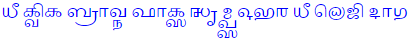
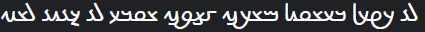

Transliterations of English
Home
Introduction
This section is where I've compiled a list of transliteration attempts I've made for English. Note that some scripts are more suited for English than others, so some imagination should be used to see where I'm coming from (and some, such as Shavian are specifically designed for English). Also, further transliterations back into the Latin script will be given below each in orange so you can follow the symbols being used if you're unfamiliar with a certain script. Assume the writing direction is left-to-right unless stated otherwise with the appropriate arrow (right-to-left being indicated by ← and top-to-bottom with ↓).
List of transliterations I've made
The sentence is "the quick brown fox jumps over the lazy dog" and the transcription I'm basing the transliterations off of is /ðiː kwɪk bɹaʊn fɒks dʒʌmps oʊvəɹ ðiː leɪzɪ dɒg/.
- Arabic (←): .ذِي كوِك براون فَاكس جٗمپس اوڤْر ذِي ليزى دَاڭ
ḏiy kwik brāwn faāks jŭmps 'wv̊r ḏiy lyzï daāg.
- Armenian: Ձէ կւիկ բրաւն ֆօկս ջըմպս օւվր ձէ լեյզի դօգ։
Jē kwik brawn fòks ǰëmps owvr jē leyzi dog.
- Bengali: ধী কুইক ব্রাউন ফাক্স ঝৃম্প্স ওভর ধী লেজি দাগ.
dhī kuik brāun phāks jṛmps obhar dhī leji dāg.
- Brahmi: 𑀥𑀻 𑀓𑁆𑀯𑀺𑀓𑁆 𑀩𑁆𑀭𑀸𑀉𑀦𑁆 𑀨𑀸𑀓𑁆𑀲𑁆 𑀛𑀾𑀫𑁆𑀧𑁆𑀲𑁆 𑀑𑀪𑀭𑁆 𑀥𑀻 𑀮𑁂𑀚𑀺 𑀤𑀸𑀕𑁆.
dhī kvik brāun phāks jhṛmps obhar dhī leji dāg.
- Burmese: ဓီ ကွိက ဗြာဥန ဖာက္သ ဈော်မ္ပ္သ ဩဘရ ဓီ လေဇိ ဒာဂ.
dhī kvik brāun phāks jhoʻmps obhar dhī leji dāg.
- Coptic: Ϫⲓ̄ ⲕⳣⲓⲕ ⲃⲣⲁⳣⲛ ⲫⲟⲝ ϭⲩ̄ⲙⲡⲥ ⲟ̄ϥⲩⲣ ϫⲓ̄ ⲗⲉⲍⲓ ⲇⲟⲅ.
Jī kwik braun phox cūmps ōfur jī lezi dog.
- Cyrillic: Ҙі куик браун фокс џымпс оувәр ҙі лейзи дог.
Źi kuyk braun foks ǯïmps ouvər źi lejzy dog.
- Devanagari: धी क्विक ब्राउन फ़ॉक्स जृम्प्स ओभर धी लेज़ि दॉग.
dhī kvik brāun fôks jṛmps obhar dhī lezi dôg.
- Egpytian hieroglyphs: 𓆓𓇋𓎡𓅱𓎡𓃀𓂋𓂝𓅱𓈖𓆑𓂝𓎡𓋴𓍿𓅓𓊪𓋴𓂝𓅱𓆑𓂋𓆓𓇋𓄿𓇋𓊃𓏭𓂧𓂝𓎼
ḏjkwkbrʿwnfʿksṯmpsʿwfrḏjljzydʿg
- Georgian: ძიი ქჳიქ ბრაჳნ ჶჸქს ჯჷმპს ჵვჷრ ძიი ლჱზი დჸგ.
ʒii kwik brawn fʔks ǯymps ōvyr ʒii lēzi dʔg.
- Ge'ez: ፂ፞ ኲክ ብራውን ፎክስ ጀ፞ምፕስ ኦውቨር ፂ፞ ሌይዚ ዶግ።
ḏī kwik brawn foks jǟmps owvär ḏī leyzi dog.
- Grantha: 
dhī kvik brāun phāks jhṛmps obhar dhī leji dāg.
- Greek: Δῑ κϝικ μπραυν φὸξ τζῡμψ όβυρ δῑ λέζι ντὸγ.
Dī kwik mpraun fòx tzȳmp͡s óbyr dī lézi ntòg.
- Gujarati: ધી ક્વિક બ્રાઉન ફૉક્સ જૃમ્પ્સ ઓભર ધી લેજ઼િ દૉગ.
dhī kvik brāun phôks jṛmps obhar dhī lezi dôg.
- Hebrew (←): .דִי כּוִךּ בּראון פַאכּס גָמפּס אובְר דִי ליזיִ דַּאגּ
ḏiy kwik br'wn p̄a'ks ḡämps 'wḇər ḏiy lyzyi da'g.
- Hiragana: ち゚ぃぃ くゐく ぶらうん ふぉくす じ々むぷす おうゔヽる ち゚ぃぃ れ゚いじぃ どぐ。
ṯii kwik braun foks jʌmps ouvər ṯii leizi dog.
- Kannada: ಧೀ ಕ್ವಿಕ್ ಬ್ರೌನ್ ಫೊಕ್ಸ್ ಜೃಮ್ಪ್ಸ್ ಓಭರ್ ಧೀ ಲೇಜಿ಼ ದೊಗ್.
dhī kvik braun phoks jṛmps ōbhar dhī lēzi dog.
- Katakana: テ゚ィー クヰク ブラウン フォクス ジ々ムプス オウヴヽル テ゚ィー レ゚イズィ ドグ。
ṯī kwik braun foks jʌmps ouvər ṯī leizi dog.
- Khmer: ធី ក្វិក ព្រៅន ផាក្ស ឈឹម្ប្ស ឱភរ ធី លេជិ ទាគ.
dhī kvik braun phāks jhẏmps obhar dhī lejhi dāg.
- Malayalam: ധീ ക്വിക് ബ്രൌന് ഫൊക്സ് ഝൃമ്പ്സ് ഓഭര് ധീ ലേജി ദൊഗ്.
dhī kvik braun phoks jhṛmps ōbhar dhī lēji dog.
- Manichaean (←):

ḏy kwk br'wn p̄'ks jʿmps 'wḇr ḏy lyzy d'g.
- Phoenician (←): 𐤃𐤉𐤟𐤊𐤅𐤊𐤟𐤁𐤓𐤀𐤅𐤍𐤟𐤐𐤀𐤊𐤎𐤟𐤑𐤌𐤐𐤎𐤟𐤀𐤅𐤁𐤓𐤟𐤃𐤉𐤟𐤋𐤉𐤆𐤉𐤟𐤃𐤀𐤂
dy·kwk·br'wn·p'ks·ṣmps·'wbr·dy·lyzy·d'g
- Shavian: 𐑞 𐑒𐑢𐑦𐑒 𐑚𐑮𐑬𐑯 𐑓𐑪𐑒𐑕 𐑡𐑳𐑥𐑐𐑕 𐑴𐑝𐑼 𐑞 𐑤𐑱𐑟𐑦 𐑛𐑪𐑜.
ð kwɪk bra͡ʊn fɒks d͡ʒʌmps o͡ʊvər ð le͡ɪzɪ dɒg.
- Sogdian (←): 
dy kwk br'wn f'ks ṣmps 'wbr dy lyzy d'g
- Syriac (←): .ܕܼܸܝ ܟܘܸܟ ܒܪܐܘܢ ܦܼܵܐܟܣ ܓܼܲܡܦܣ ܐܘܒܼܿܪ ܕܼܸܝ ܠܝܙܝܸ ܕܵܐܓ
ḏiy kwik br'wn p̄a'ks ḡămps 'wḇər ḏiy lyzyi da'g.
- Telugu: ధీ క్విక్ బ్రౌన్ ఫొక్స్ ఝృమ్ప్స్ ఓభర్ ధి లేజి దొగ్.
dhī kvik braun phoks jhṛmps ōbhar dhī lēji dog.
- Thai: ธี กวิก พราวน ผากส ฌๅมปส โอภะร ธี เลชิ ทาค.
dhī kwik brāwn phāks jhṛmps 'obhar dhī leji dāg.
- Ugaritic: 𐎏𐎊𐎟𐎋𐎆𐎋𐎟𐎁𐎗𐎀𐎆𐎐𐎟𐎔𐎀𐎋𐎒𐎟𐎙𐎎𐎔𐎒𐎟𐎜𐎁𐎗𐎟𐎏𐎊𐎟𐎍𐎊𐎇𐎊𐎟𐎄𐎀𐎂
ḏy·kwk·br'awn·p'aks·ġmps·'ubr·ḏy·lyzy·d'ag
- 'Phags-pa (↓):
ꡒꡞꡖ ꡀꡧꡞꡀ
ꡎꡘꡖꡧꡋ ꡍꡖꡀꡛ
ꡆꡥꡏꡌꡛ ꡡ ꡤꡘ
ꡒꡞꡖ ꡙꡠ ꡕꡞ ꡊꡖꡂ᠃
dzi' kwik
bra'wn pha'ks
jggmps o far
dzi' le zi da'g.